Heap sort complexity
Now, let's see the time complexity of Heapsort in best case, average case, and in worst case.
We will also see the space complexity of Heap sort.
1. Time Complexity
Average Case O(n log n)
Worst Case O(n log n)
Now, let's see the working of the Heapsort Algorithm.
In heap sort, basically, there are two phases involved in the sorting of elements. By using
the heap sort algorithm, they are as follows -
The first step includes the creation of a heap by adjusting the elements of the array.
After the creation of heap, now remove the root element of the heap repeatedly by shifting it to the end
of the array, and then store the heap structure with the remaining elements.
Now let's see the working of heap sort in detail by using an example. To understand it more clearly,
let's take an unsorted array and try to sort it using heap sort. It will make the explanation clearer and easier
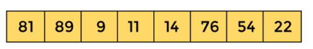
First, we have to construct a heap from the given array and convert it into max heap.
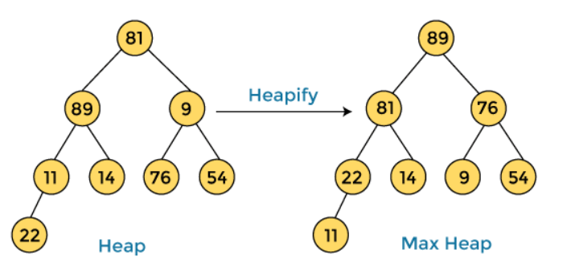
After converting the given heap into max heap, the array elements are -
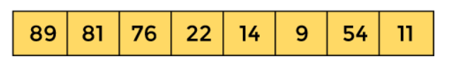
Next, we have to delete the root element (89) from the max heap. To delete this node, we have to swap it
with the last node, i.e. (11). After deleting the root element, we again have to heapify it to convert it into max heap.
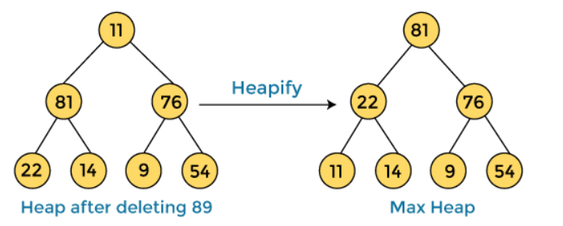
After swapping the array element 89 with 11, and converting the heap into max-heap, the elements of array are -
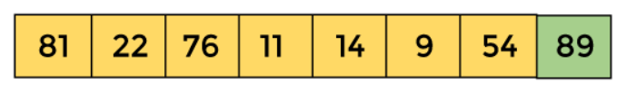
In the next step, again, we have to delete the root element (81) from the max heap. To delete this node, we have to
swap it with the last node, i.e. (54). After deleting the root element, we again have to heapify it to convert it into max heap.
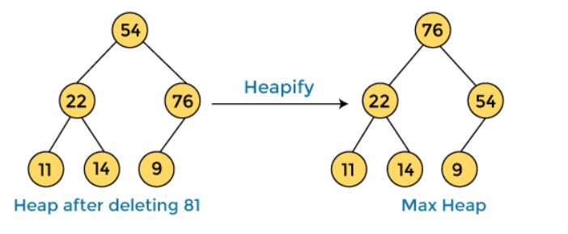
After swapping the array element 81 with 54 and converting the heap into max-heap, the elements of array are
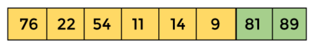
In the next step, we have to delete the root element (76) from the max heap again. To delete this node,
we have to swap it with the last node, i.e. (9). After deleting the root element, we again have to heapify
it to convert it into max heap.
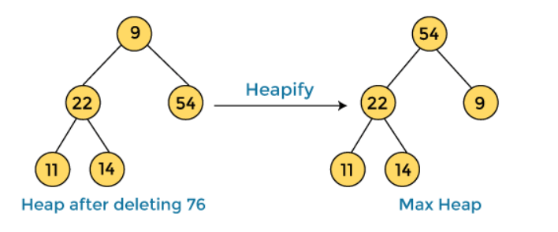
After swapping the array element 76 with 9 and converting the heap into max-heap, the elements of array are -
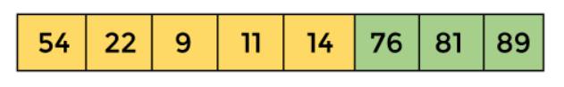
In the next step, again we have to delete the root element (54) from the max heap. To delete this node,
we have to swap it with the last node, i.e. (14). After deleting the root element, we again have to heapify
it to convert it into max heap.
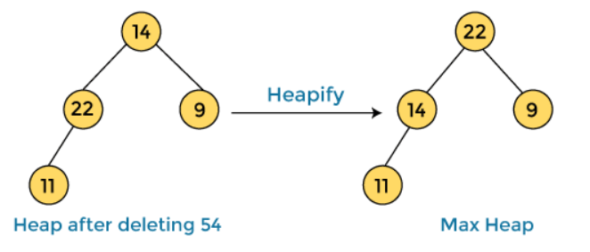
After swapping the array element 54 with 14 and converting the heap into max-heap, the elements of array are -
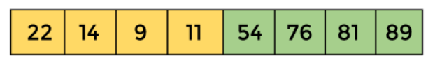
In the next step, again we have to delete the root element (22) from the max heap. To delete this node,
we have to swap it with the last node, i.e. (11). After deleting the root element,
we again have to heapify it to convert it into max heap.
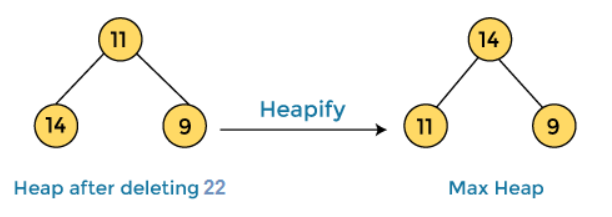
After swapping the array element 22 with 11 and converting the heap into max-heap, the elements of array are -
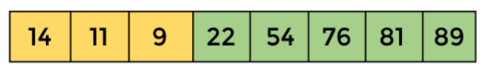
In the next step, again we have to delete the root element (14) from the max heap. To delete this node,
we have to swap it with the last node, i.e. (9). After deleting the root element,
we again have to heapify it to convert it into max heap.
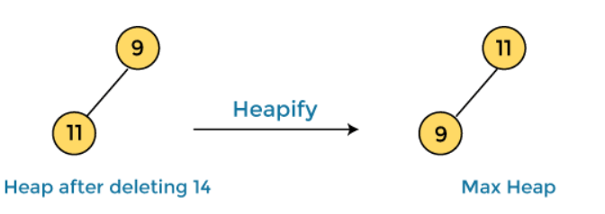
After swapping the array element 14 with 9 and converting the heap into max-heap, the elements of array are -
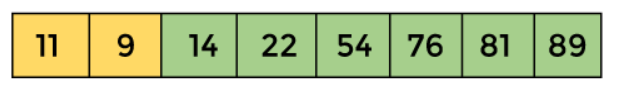
In the next step, again we have to delete the root element (11) from the max heap. To delete this node,
we have to swap it with the last node, i.e. (9). After deleting the root element,
we again have to heapify it to convert it into max heap.
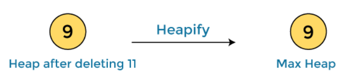
After swapping the array element 11 with 9, the elements of array are -
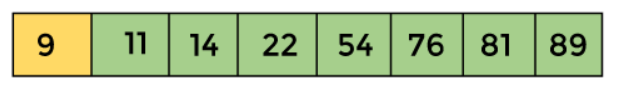
Now, heap has only one element left. After deleting it, heap will be empty.
After completion of sorting, the array elements are -
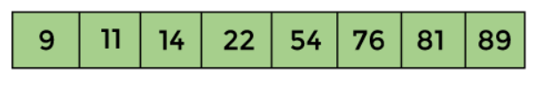
Now, the array is completely sorted.
Start Visualizer